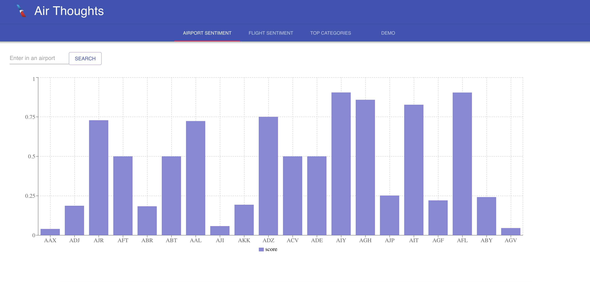
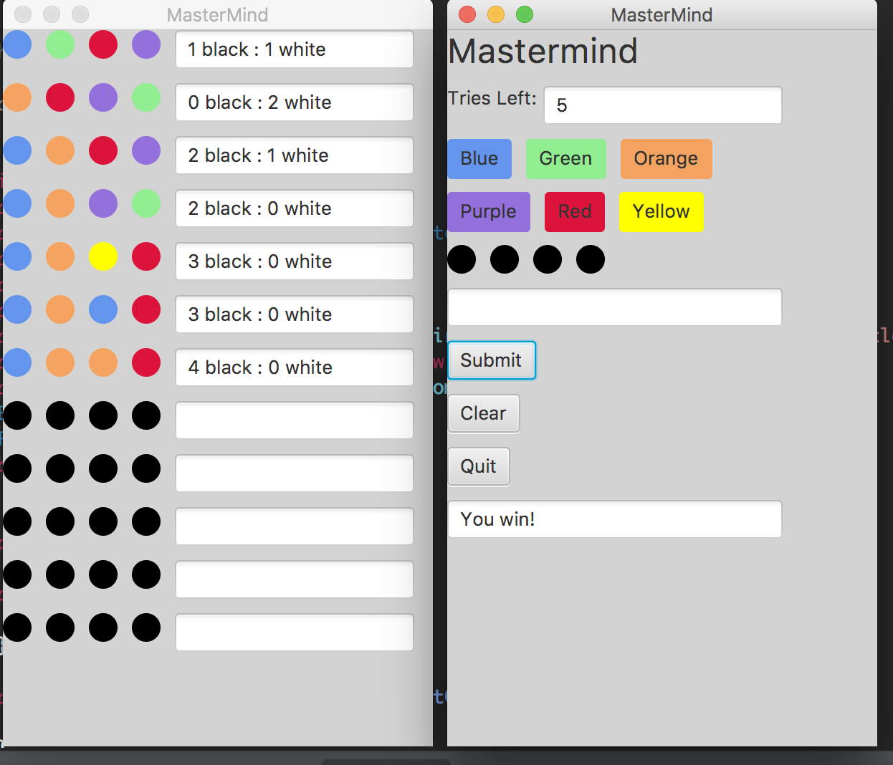
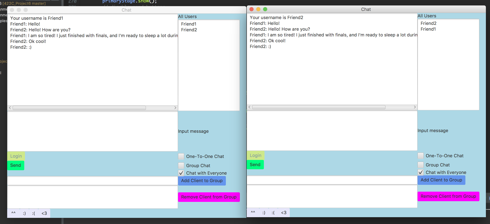
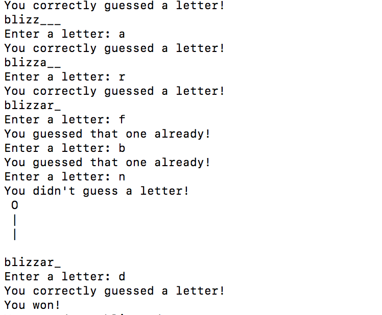
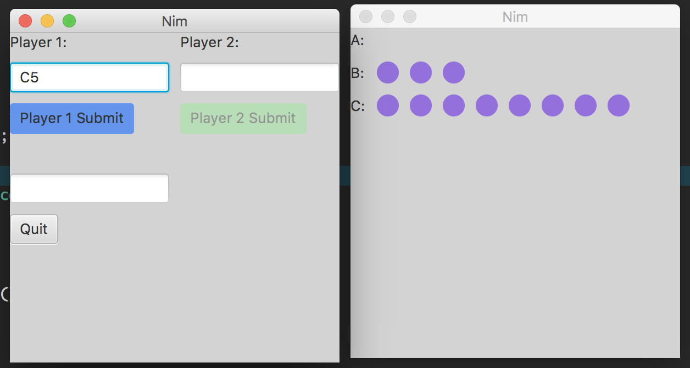

Stellar Spine
UT ECE Senior Capstone Design Project: Created a real-time scoliosis brace compliance monitor in a team of 6. The system consists of a sensor and a mobile application, and it allows users to view compliance data in real-time and receive incentives to wear their brace. I primarily worked on the mobile application which is built using React Native. The project received first place among the Honors/Entrepreneurial teams.
Air Thoughts
HackTX 2018 Project: Worked on a team of five to create a web application that
identifies and leverages customer sentiments for American Airlines customers in real time.
The app displays sentiment analysis of live conversations and parses keywords to understand
the conversation topic and the sentiment associated with the topic. The project was created
using React, Material UI, Recharts, Flask, MongoDB, RevSpeech API, and the Microsoft Azure
Text Analysis API. We placed in the top 10 projects overall and won third place for the American
Airlines challenge, and we developed the project during the 24-hour hackathon.
Github Repository
WiFi Piano
EE 445L Final Project: Worked with a partner to create an WiFi piano that would allows users to play notes and chords on the piano. Users record the sequence of notes played and send it to a data logging server. I worked on creating the data logging server, the notes, the DAC output, and soldering the components to the PCB. Link to Server
UT Bathroom Services
EE 461L Team Project: Worked in a team of 4 to create an Android app that would allows users to find bathrooms and water fountains
on the UT campus. Users can filter facilities by factors such as location and cleanliness
and can leave reviews. I worked on integrating the app with Google Firebase, setting up
Cloud Firestore noSQL database, and the Favorites activity.
Github Repository
Mastermind Game
Created Mastermind game using Java and JavaFX.
Github Repository
Chat Room
EE 422C Partner Project: Used socket programming, multithreading, JavaFX, and the observer design pattern in creating a chat program. The chat program supports 1-1 chat, group chats, and public chats, and works across computers.
Hangman Game
Created Hangman game using Python.
Github Repository
Nim Game
Created Nim game using Java and JavaFX.
Github Repository
Room Availability Monitor
Created a Internet of Things room monitor that shows the availability of conference and phone rooms. The hardware used includes the ESP8266 WiFi module and a motion sensor. The website consists of a floor map with the rooms highlighted in green or red, depending on the room status. Debugged the hardware system to ensure the WiFi module connected to the REST API. Worked in a team of five during a two day hackathon to develop the system.